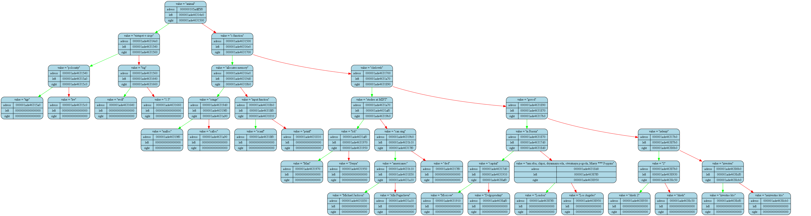

<pre>
<pre>

Tree dump from (int RunAkinator()) at (akinator.cpp) at line (48):
tree [000000105adff5c0] "&tree" at (int RunAkinator()) at (akinator.cpp)(6):
{
	status   = 1
	error    = 0
	size     = 41

	(((("tigr")"polosatiy"("lev"))"vistupet v cirqe"(("wolf")"big"("1.5")))"animal"(((("malloc")"cringe"("calloc"))"allocates memory"(("scanf")"input function"("printf")))"c function"(((("Max")"loh"("Senya"))"studies at MIPT"((("Michael Jackson")"americanec"("Alla Pugacheva"))"can sing"("ded")))"chelovek"(((("Moscow")"capital"("Dolgoprudniy"))"in Russia"(("London")"tam riba, chipsi, dryannaya eda, otvratnaya pogoda, Marry *** Poppins"("Los Angeles")))"gorod"((("shrek 2")"2"("shrek"))"zeleniy"(("izvestno kto")"izvesten"("neizvestno kto")))))))
}
